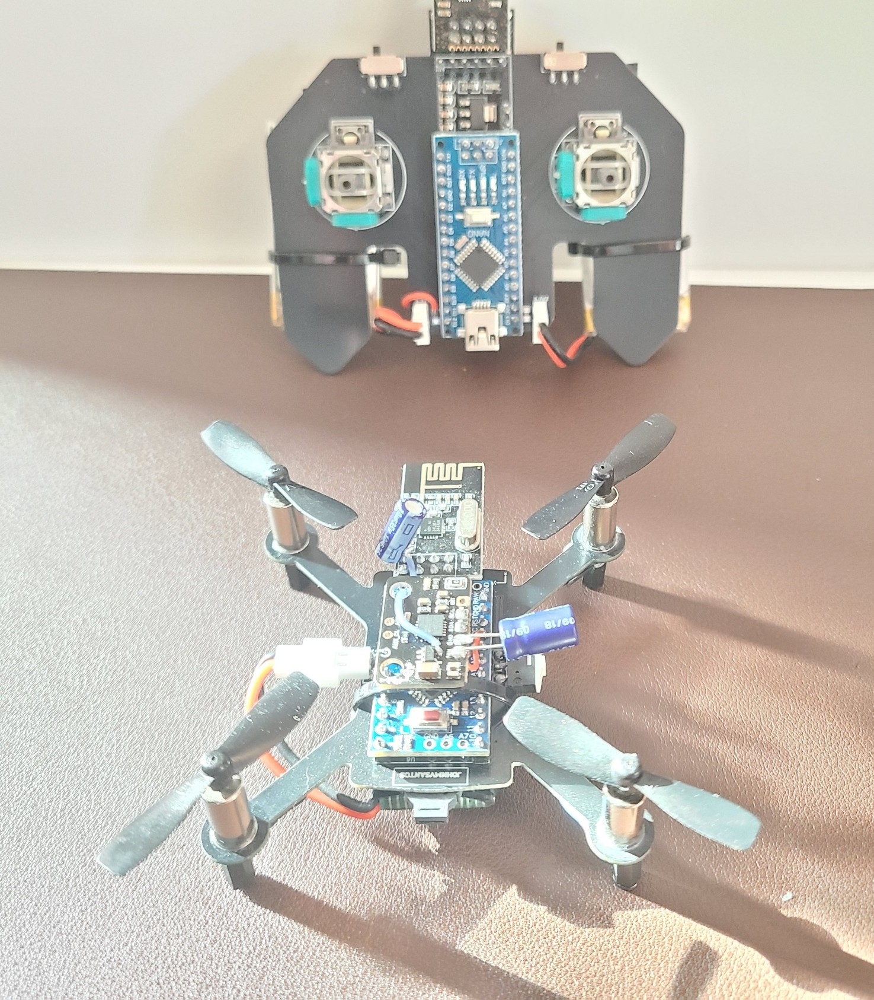
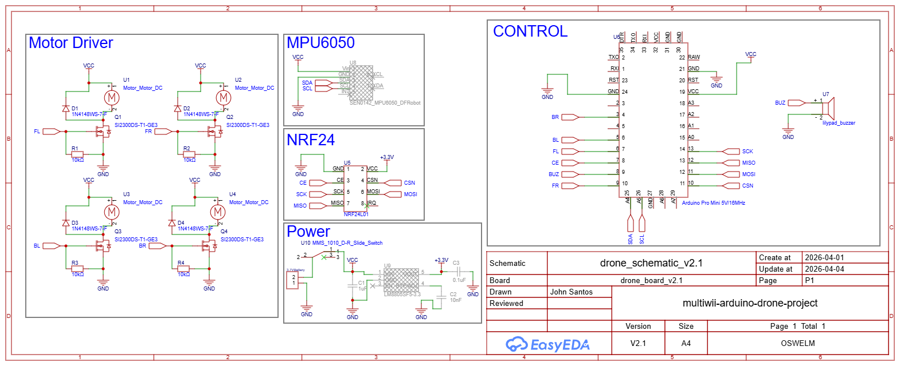
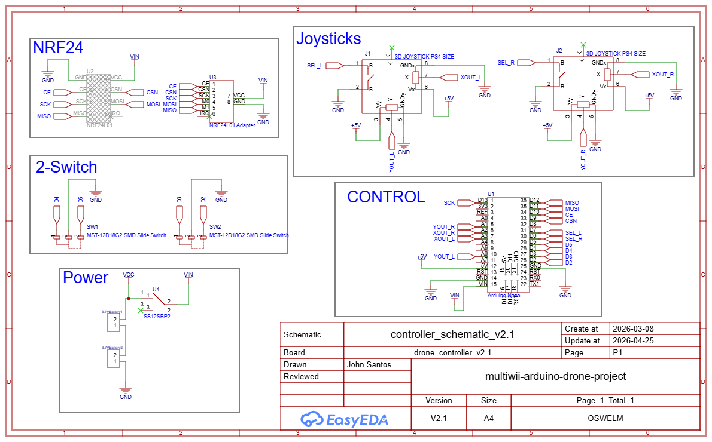
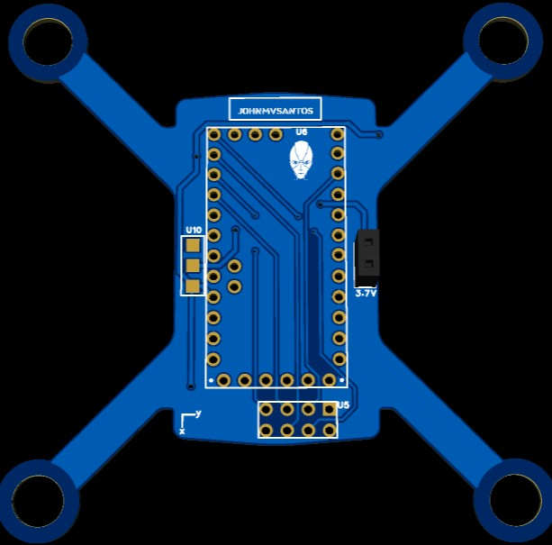
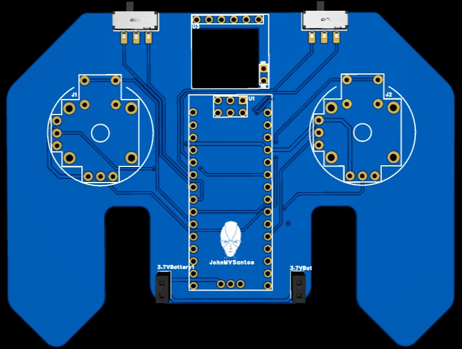

Project Repositories
About the Project
An FPV quadcopter drone is built using Arduino Nano microcontrollers and NRF24L01 radio modules for communication. This project contains two pieces of hardware, the drone and the controller.
The drone is built with an Arduino Nano microcontroller, an NRF24L01 radio module, an MPU6050 gyroscope and accelerometer, a BMP085 barometric pressure, temperature, and altitude sensor, DC-to-DC step-down voltage regulator, and a motor driver. The circuit also utilizes filtering capacitors to reduce noise at the power inputs of the components. The motor driver consists of surface mount components; N-channel mosfets, shottky diodes, 10Kohm resistors. The motor driver controls the power delivered to the motors.

The controller consists of an Arduino Nano microcontroller, an NRF24L01 radio module, two joysticks, and SPDT switches to control the drone activation and beeper.

The assembly involves soldering the components onto a custom PCB that was designed using Fusio360 and EasyEDA. The PCBs were printed using EasyEDA and PCBWay. Once the components are assembled, the firmware that was written in C++ are uploaded into the microcontrollers to initiate the communication between the drone and the controller. The MultiWii software is used to arm and calibrate the drone for flight stability.
Drone PCB

Controller PCB

This project was inspired by Max Imagination's and Electronoobs drone projects.